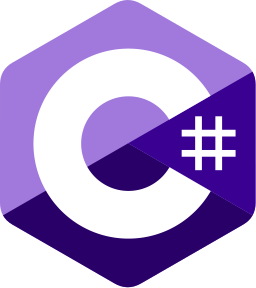

My Skills
-

HTML
I Learned HTML from ITNetwork, thanks to them I can make sites like this one.
-
CSS
I Learned CSS from ITNetwork, thanks to them I can styleee and center.
-

JavaScript
Standard for web development. Learned JS, but now I need to learn a ton of frameworks...
-
C
I was taught C in my first year in school, I haven't used it as much after, only sometimes for Garry's Mod.
-

C#
I briefly learned C#, when i was making games in Unity, but now I've put much more time into learning it fully.
-
Python
I used Python mainly for personal projects, but I've also used it to make Discord bots.
-
SQL
Always use it. Mainly for Garry's Mod or when i coded Discord bots.
-
Lua
My favourite boy. I'm using Lua for the longest time and I have projects on Steam Workshop and also helped several mods. Projects